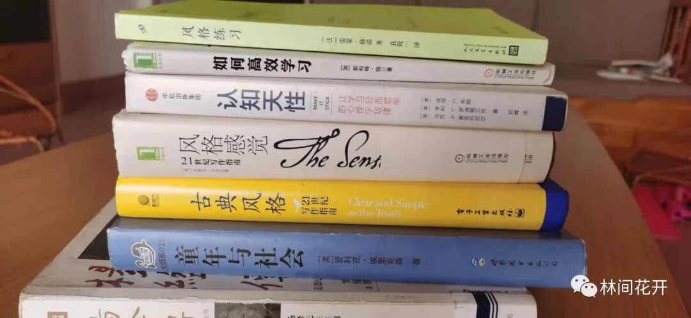
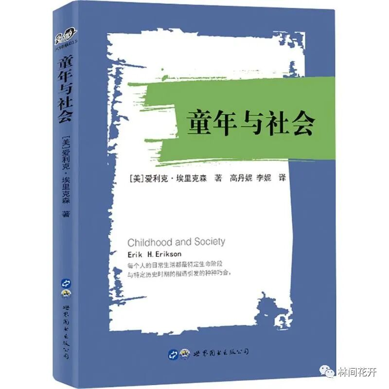
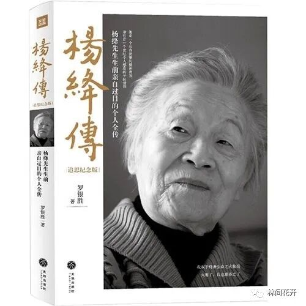
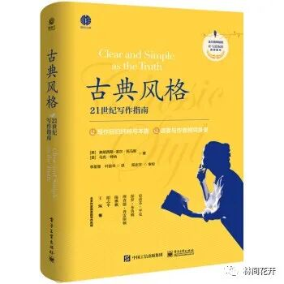
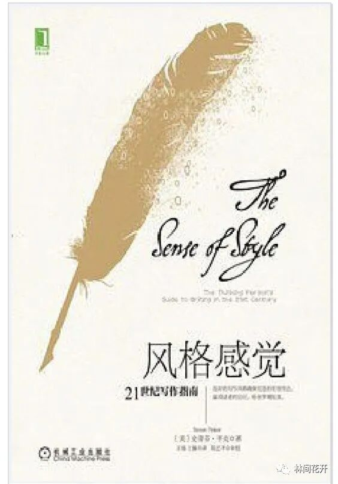
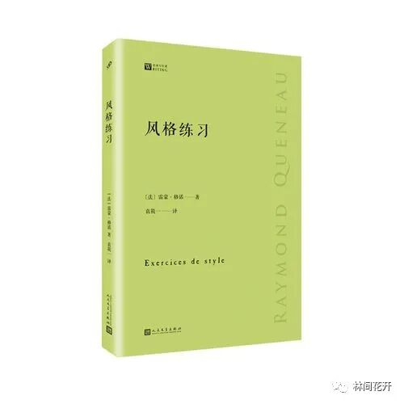
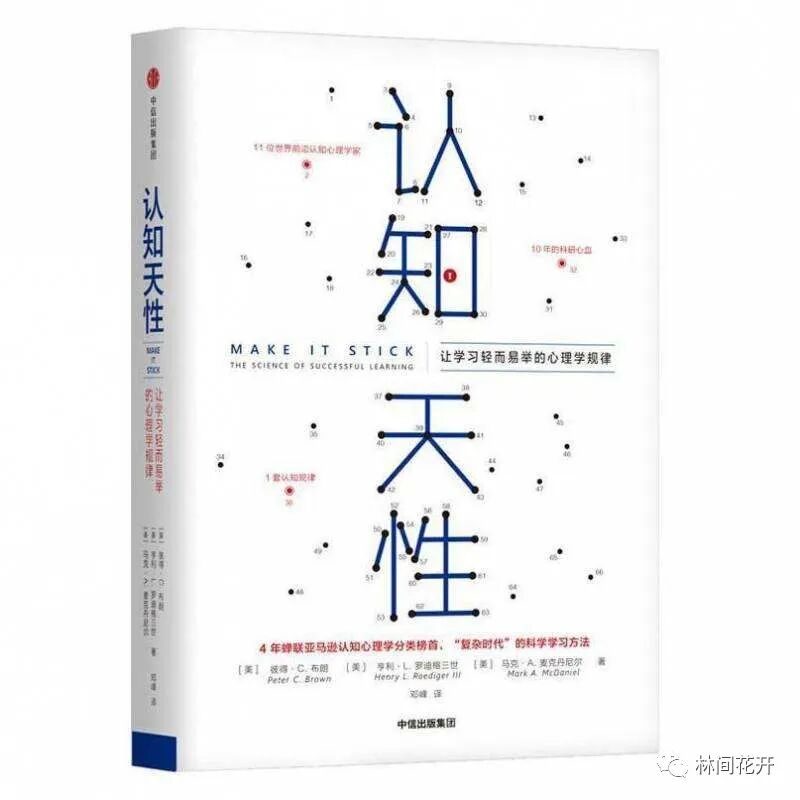
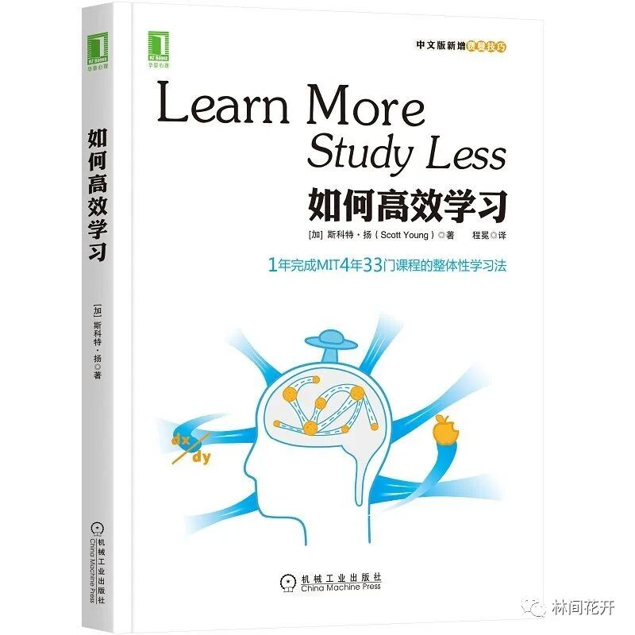

找回写作状态
写在前面
看到六一在行为分析三期群里发起活动：
发起一个小活动，提出一个小目标，有没有同学一起参加：连续7天（任何形式的创作，文字，音乐，音频，视频，图画，舞蹈……）
我毫不犹豫加入报名，今年立了新年flag后，没有做到坚持输出，有时写有时没写，断断续续，这次想借助同侪的压力，找回阅读和写作的状态。六一为了提高加入的门槛，提出无法坚持打卡的同学，结束后在群里发38元红包。
加入小群后，我设定了七天目标：读七本书，输出七张书评卡。
我没有提前挑选要阅读的书籍，看了第一本就有第二本，第三本，自发阅读。第一本书挑的是心理学家埃里克森的「童年与社会」，这是开智人性大师课3月份的共读书籍，放置有一段时间，3月份要输出卡片和写作业，正好借这次打卡，逼迫自己阅读。

文字会赶着文字走，阅读也会赶着阅读走。
第二类读的是跟写作相关的书。读完认知科学家特纳的「古典风格」后，自然就想到得重读史蒂芬.平克的「风格感觉」。他极为推崇古典风格，回到书中，看他是如何定义古典风格，如何从古典风格的角度写一本书。跟风格有关的还有一本法国作家格诺的「风格练习」，一并读了。
第三类是学习有关的书，两本。一本是去年开智人生资本课挑选的「认知天性」，写了一半的读书笔记，拖了又拖，一直没成文，这次重读，有新的收获，把笔记都写了，读完后，找回「如何高效学习」，对比阅读。
书1:「童年与社会」

如果没有掌握阅读方法，埃里克森这本书，很难读进去。看了两遍他写的三篇前言，对这本书的结构有一定的了解后，采取抽样阅读。在书中，他用精神分析的方式研究儿童经历的事件：
所有人最初都是儿童，并且所有人都起步于摇篮。长大成人的个体身上仍然会残留童年时期的非理性恐惧情绪。
不难发现，第七章是核心章节，也是埃里克森最重要的观点，他基于弗洛伊德的「性心理发展阶段」，提出人类的毕生发展理论：人格的心理社会性发展八个阶段，强调社会、文化、历史的重要性：
- 信任对不信任
- 自主对怀疑和羞怯
- 主动对内疚
- 勤奋对自卑
- 同一性对角色混乱
- 亲密对孤独
- 繁殖对停滞
- 自我完善对失望
干读这一章，很枯燥。可以降维阅读，是回到第一、二章，结合案例看理论。埃里克森早期是一名儿童分析师，来访者的案例成了他理论的研究样本，书中提到的有年幼儿童的焦虑、美国印第安人的冷漠、退伍军人的困惑、纳粹分子希特勒、高尔基等。
埃里克森最为出名的理论就是提出了「同一性」，他认为人类发展的八个阶段会出现同一性危机，人们一般会采取两种方式回应，消极的，或是积极的。当危机解除时，才能获得能量进入到下一阶段；如果危机没有解决，冲突仍然存在，就不能顺利进入下一阶段。
如其他人格心理学家一样，埃里克森的生活经历，催化他探索同一性理论。他写道：“我最好的朋友会坚持认为，我需要命名这种危机并看到它在他人身上是什么样子。"
正是童年和青少年的经验，使得埃里克森得于在他成年时，建立了同一性理论，他经历过的都变成一笔财富，成了源源不断的观点，这就是高手的厉害，把自身的冲突变成作品。弗洛伊德也如此，他提出的俄狄浦斯情结、性理论、梦的解析、人格的三个层次都是基于他童年时期的经历，后期加以探索。
书2:「杨绛传」

这本「杨绛传」是传记作者罗银胜写就，她在阅读了大量杨绛口述的一手资料和采访后，写出了杨绛的百年人生。书中按时间线，主要写了杨绛的童年成长、家庭变迁、求学历程、文学创作、以及她和钱钟书的爱情故事。在2016年，她以105岁的高龄去世，放下世间的一切，赶赴「我们仨」的团聚。
杨绛是钱钟书眼中的「最贤的妻，最才的女」。尽管在钱钟书生前，她有才情，但她甘愿成为钱的「灶下婢。
杨绛做过不少工作，不管是补习老师、英语老师、大学教授、中学校长，还是作家、翻译家，在她看来，这些工作都只是暂时的，只有成为「钱钟书生命中的杨绛」才是她终生的工作，她对这项工作感到满意：
这项工作非常艰巨，常让我感到人生实苦，但苦归苦，也很有意思。钱钟书承认他婚姻美满，可见我的终身大事业很成功。
杨绛在婚姻中有很强的共生动机，时时以钱钟书为重，保全他的天真、淘气和痴气，但杨绛没在婚姻中丧失自己，仍然保留着很强的自主性，在事业上也有一番成就，是作家、是戏剧家、也是翻译家，写过「我们仨」、「洗澡」、「干校记」、「走在人生边上」、「坐在人生边上」等名作，在晚年还翻译了「堂吉歌德」。即使是在女儿钱媛、钱钟书相继离世后，她仍没有停下，继续「打扫战场」，帮钱钟书生前未完成的笔记陆续出成书，给大家留下了一个又一个文化瑰宝。
喜欢杨绛，在于她一生经历人生的起起落落：战火、疾病、政治风暴、生死离别后的态度，仍然能积极面对生活，保持平静、淡然、知足；在于她淡泊名利，对内求索，埋头阅读浩瀚的书籍；也在于她跟钱钟书半个世纪相濡以沫的爱情，他们相互尊重，相互欣赏，各自发光发亮，两人的爱情令人动容，她既是钱钟书的妻子，也是情人和朋友。
她安静、高贵、优雅，又有一颗生动又有趣的灵魂，哪怕她不在人世了，读着这本传记，透过文字，仍然感受到她传递的坚韧的品格和力量感。
书3:「古典风格」

写作难吗？难啊，不仅对我这种写作初学者来说，即使对那些有才华天赋加持的作家来说，也不是一件轻松的事，不然海明威在面对记者的问题，就不会抛出金句「他应该出去上吊自杀，这样他会发现想写得好比登天还难」。
看了星星教练译的「古典风格」这本书后，对写作的难有了新的领悟。写作的难，不是难在要掌握一堆写作技巧，如何立意；如何划分段落，如何标标点符号；如何遣词造句。
写作的难，难在认知上，因为写作就是一场智力活动。思想先于语言，在下笔之前，头脑就已经思考千百遍：选择何种态度；什么主题；如何表达，这个过程，就是一场大脑的模拟。在下笔时，深思熟虑的这些内容，才能化为文字。写作不是边写边想，而是写之前就想好了，只待下笔。排个顺序：写作风格在前，快写在后，慢改最后。
伟大画家之所以伟大，不是他的绘画技巧有多牛，而是他有自己的风格，如梵高，他的每一幅画都代表着「这是梵高的画」，而不是其他画家的画。
学习写作，首要学的是风格，这是写作中的道，写作技巧则是写作中的术，哪怕你掌握了很多写作的术，没有塑造风格，文章注定失败。
在书中，托马斯和特纳两位认知科学家基于写作风格的要素，提出了两种写作风格：一种是古典风格，另一种是非古典风格，他们推崇的是古典风格。
什么是古典风格？认知科学家史蒂芬.平克在「风格感觉」一书中，使用了「观看世界」的隐喻给古典风格下了个定义。在写作时，作者把看到的真相，经过一番思考后，清晰地表达出来，引导读者观看。从古典风格的隐喻中，强调了一个事实：写作不是一个人闷头在写的过程，而是作者假装在跟读者的一次对话，两人形成了「联合注意」，把感受到的喜怒哀乐传达给读者。
如何区分是古典风格，从风格的五要素出发：真相、场景、呈现、角色、思想与语言，这是写作风格的基本单位，第二部分有详细的介绍。
简单说下古典风格的基本要素：
- 真相作者选定的一组想表达的主题，以不偏不倚的方式呈出出来，自带说服力，以文字清晰表达出来。举个例子，说明古典风格与其他风格的区别。「早起的鸟儿有虫吃」这是平实风格，注重眼见为实，无需读者验证真相；「早起的鸟儿有虫吃，但第二只老鼠才吃到奶酪——因为第一只老鼠被捕鼠器逮住了」，这才是古典风格。
- 场景是一对一的对话，也就是说，写作要「假装」你有一个读者，你要考虑Ta的感受，在跟TA对话时要形成「联合注意」，把想表达的信息传达到位，让读者有一种「我如你一样，在现场。」。作者与读者是一种对等的关系，作者既不能高高在上，显示不必要的优越感（这种是先知风格）；无需求于读者，像营销文案，常表达出渴望用户的购买需求，这种就不是古典风格。
- 呈现古典风格是一种表演风格，就如电影一样，只需向观众呈现拍好的电影，无需把台前幕后的花絮、NG镜头也展示出来，写作也一样，你是怎么思考的，这过程不重要，重要的是，给读者看你慢改后最终呈现的文字。就如这张卡片，在下笔后，写了删，删了又写，前后不知删了多少，改了多少，但你最终只能看到写的这张卡片，其他的无从看到。
- 角色写作不是一个人自顾自话的过程，而是 作者与读者的一次对话，一对一；区别于演讲风格的一对多。
- 思想与语言语言是能够表达任何思想的，不能够表达出来，在于作者的水平不够，而不是语言的问题。思想先于写作形式，在下笔前就要确定想要表达的思想。
为什么古典风格如此重要？阳志平老师在「古典风格」推荐序中总结了三点：
- 它更符合人类的认知习惯
- 它灵活多变，适合一切文体
- 它简洁却不简单，它清晰却不肤浅
也如史蒂芬.平克所说：
古典风格不是唯一的写作方法，但它是一种理想的写作方法，将作者从许多最坏的习惯中拉回来。它之所以特别有用，是因为它使写作这件不自然的事变成我们做起来最自然的两件事：说与看。
书4:「风格感觉」

当认知科学家跑到文学家的地盘时，会发生什么？从此，有了「古典风格」，有了「风格感觉」这些面向21世纪的写作指南，也有了阳志平老师的认知写作课和快写慢改课，那些不符合心智认知和语言规律的写作手册都要改写。
「风格感觉」这本书是史蒂芬.平克，对怀特经典之作「风格的要素」的一次致敬，他受益于「风格的要素」，强调写作要朴实、简洁、清晰、真挚，但他认为这本经典写作指南，过时了，不能满足于21世纪人们的写作：
斯特伦克和怀特书中的许多部分既有魅力又经得起时间考验，不过也有许多不尽如意的地方。在现代语言和认知科学出现之前，对写作风格的感觉已经养成，不能全听他的建议。
在他的作家妻子rebecca的鼓励下，有了这本面向21世纪的写作指南——「风格感觉」。
平克极度推崇古典风格，认为古典风格是他写作的最好解药，在书中，用了整整一章介绍了古典风格是何物，风格的种种等。什么是古典风格？用了「观看世界」的隐喻描述古典风格。
全书共六章。第一章是好文章的范例。成为好读者是成为好作者的起点，每个作家几乎都有一个由海量新异词汇、金句、比喻等修辞构成的写作清单，作家都有自己的素材库。成为好读者是写作的第一步。
第二章是介绍古典风格。如何在众多风格下，判别出古典风格，在于两点体验：一是看作者是如何对待读者的，高于读者身份还是有求于读者，还是与读者构成一对一平等的关系；二是看作者是如何表达观点的，古典风格的作者呈现的是不偏不倚的观点。
第三章是知识的诅咒。你知道的不一定别人都能知道，如何让外行看内行写的文章，好的方法是写术语、缩略语和技术语时，从从已知往未知方向推进。
第四章是句法树。这一章是句子的表达，常见的句子问题是「向左分支」，也就是我们常说的长句，使用过多的前置语句堆砌在句子的左边，如这句：
认罪的奥运会滑冰运动员南莤.克里根袭击者布莱恩.格里菲斯死了。
长句的问题，在于前置语太多，谓语和宾语太靠后，不易抓到重点。破除长句的方法是，拆解成多个小句。
第五章是连贯之弧，是本书的重中之重。一篇文章出现问题，有可能是行文臃肿、学术味过重，这类可以用古典风格破除；还有一类是晦涩难懂、高深莫测，这类是因为知识的诅咒引起，还有一些句子错综复杂、表述模糊不清，这些都可以画句子树来避免。还有一类是句子表达顺畅、简洁，单个句子看，没毛病，句也句串在一起，就支离破碎，让人无法理解前后意思，平克把这类问题看成是「不连贯」，用快写慢改来表达，是组块与组块的衔接有问题。
如何解决文章中的不连贯问题？这里还可以再分为句子与句子的连贯问题，篇章组块之间的问题。如果是篇章组块的连贯问题，非虚构篇章可以选择信息树来优化，遵从信息树的四原则；句子与句子的连贯问题，阳老师结合了「风格感觉」第五章的核心知识点，提炼出句子的三角形：突出重点、对齐方向、比例均称。对齐方向上，遵从的「单一变量法则」，这个术语借助的是科学实验的一个词汇，用来描述在写作时，统一其他内容的形式，凸显核心要素的变化。这块常见的问题是，在一个句子中，主语老是变来变去，记得在写作课有个同学，写的一篇「奶奶棕」中，主语一会是孩子、一会是奶奶、一会我，从单一变量法则出发，最好是把主语统一为「奶奶」。
什么是好的中文？余光中说，好的中文，离不开措辞简洁、语法对称、句式灵活、声调铿锵。在平克这里，好的中文是，少用元话语、抽象名词、模糊词汇、好的写作也是放弃专家腔，多用人称代词我和你，用古典风格对话；好的中文，也是句与句、段与段要连贯。
好文章都是改出来的，别想着一次就能写出一篇好文章。如果你懂得一些好的写作习惯，写作就能事半功倍。好的写作习惯包括古典风格写作，与读者来一场即兴对话，用连贯之弧串起主题、论点、行动者和主旨，以写作八大原则破除写作恶习。
书5:「风格练习」

同样是「风格」主题的书，我更享受「风格练习」这本小书，把我从「古典风格」、「风格感觉」两本硬核的写作指南中解放出来。
「风格练习」让作者格诺从一名默默无闻到声名鹊起，至今翻译有35种语言版本，最出名的，当属意大利作家艾柯翻译的版本。「风格练习」出版两年后，改编成戏剧，在法国三个电视台播放，之后每年都有新的改编内容上演，还产生各种语言的变体，滑稽模仿和语言练习。
「风格练习」是格诺在语言上的一次个人探索，把语言当成了一种游戏，在他的大脑洞之下，用99种叙述，讲了同一个故事，但这本书很难归类，不是小说，也不是诗歌，也不是杂文，只能说是风格的99种练习。讲述的故事非常简单，不到200字：
S公共汽车上，某天的高峰时间，很挤。一年轻男子，衣着外貌有些乖张，与人发生争执，但很快离开原先的位置，抢了个空位坐。之后不久，他又出现在圣拉萨尔火车站前罗马庭院那，与另一年轻人在一起交谈，两人在讨论外套上衣纽扣的事情。
99种风格有笔记体、隐喻、反溯、主观视角、造词、否定、简单过去时、漫不经心、十四行诗、电报体等等。作者玩文字玩得很嗨，据说原计划练习的篇数要多得多，但为了不让读者厌烦，就挑了99种，不多不少，这个数字还是他理想的一个数字。
在书的后记「卷宗」里有提到，99种风格变形的灵感，是来自他有一次在演奏厅，听了巴赫的「赋格的艺术」，激发了他想把音乐的变奏迁移到文学上：
用变奏的方式，围绕同一个单薄的主题衍生出几近无穷的变化，如此来写一部作品。
这个「变奏」计划从1942年5月开始，先是写了十二篇，接着在后面陆续又写了一些，在1947年出版了「风格格练习」。
看到作者玩语言游戏，不亦乐乎。他在「隐喻」风格中，用大昆虫比喻成巴士；沙丁鱼比喻车上的人；小雏鸡儿比喻着急下车的人们，生动，形象，特别带感。有多少种风格，就有多少种乐趣，如果能找三五好友来演一演，应该会更有意思。当然，不能对这本小书抱太多的期望，就当成是一本好玩，开脑洞的书就好了，感受下创作的各种可能性。
书6:「认知天性」

学习从来都不是一件轻松的事，但学习有方法，有技巧，如果掌握了大脑机制的秘密，学习就能事半功倍。好的学习不依赖强大的基因，更依赖掌握大脑的规律。
「认知天性」在亚马逊认知心理学分类榜首蝉联4年，是一本不可多得的「如何科学学习」的书，集结了11位前沿认知科学家，10年的科研心血。他们从脑神经科学研究成果中，推导出的一套有利于大脑的学习法则。
这套学习法则刷新了我的学习观念，过去我很反感考试，但没想考试还是一种非常好的学习策略，因为考试需要你主动去回忆学过的知识，主动检索，强化了记忆。比起反复阅读，在书中划线，集中练习这些对短期记忆有效的学习方法，检索练习能增强长期记忆，比如阅读完来个小自测效果更佳。如果两次自测间隔开时间，记忆效果更好。研究表明，一次自测，一周后回忆率能从28%上升到39%；如果是两次以上的自测，回忆率在56%；测两次比只测一次的效果要好，只测一次也比不测的效果要好。
这本书虽然明面讲的是如何通过检索、间隔检索、穿插不同主题学习、多样化学习等，来提升记忆力，从而提升学习效果，但站在神经科学的角度看，「认知天性」暗面讲的就是如何通过改变身体的相关结构，来激活大脑与身体的联结，帮助大脑神经元建立更多的回路，以此增强记，换一句说，这本书，其实讲的就是如何强化大脑神经元联结的书。
书7:「如何高效学习」

「认知天性」是一本认知心理学研究成果的书，科学实用性强，那么「如何高效学习」就是一本实践学习的书，没有科学证据，但实践性强。两本书可以结合一起看，更有启发。
谁都想用最少的时间学习，获得最大的学习效果。「如何高效学习」的英文标题已揭示出：Learn More，Study Less，学习可以做到，用时少，学得多。
读完整本书，核心内容很明确，也很简单，就是要整体性学习，什么是整体性学习？这是相对死记硬背而言的一种学习策略。我想作者是有研究过神经学相关的知识，他提出的整体性学习，其实就是从大脑学习的角度提出，人类的大脑有上数亿个神经元交织在一起，相互影响，就如一张网一样，所以学习不能只靠单纯地背来存储信息，那是计算机做的事情，任何的知识都不可能是孤岛。不同于死记硬背，整体性学习法把知识看成是有结构有组织的网，知识与知识之间是有关联的，这就是作者在研究了聪明人的学习方法上提出的一个学习方法论。
用大白话来说，整体性学习的核心观点就是：
- 新知识要与旧知识结构产生链接；
- 要以应用为导向来学习；
- 以各种熟悉或形象化的方式来形成记忆。如用比喻、类比等修辞手法，批量处理、笔记流等。
作者Scott Young是一位超级学霸，他在书中践行的学习策略整体性学习法，就是他基于他长期学习摸索出来的一套巧学习法，通过这套方法，他用10天完成了线性数学；用1年时间完成麻省理工大学4年33门课程；他大学学的是商业学，却自学编程，还利用业余时间，出了几本有影响力的书。当别人认为他是天才时，他却说，他是遗传了父母积极的进取心，外加少些的天分。他说，这套学习方法，适用于不是天才的普通人。在看了他成功的案例后，鸡血满满，很想照着做，看能不能成为一名学霸。
如何实践，他引用的是费曼学习法：
1、选择要学习的概念或术语；
2、假装自己是老师，正在教会一名新生你学到的知识点；
3、遇到疑惑时，返回去吧；
4、尽量用简单化或是比喻的方式解释
这让我想到行为分析课最近在学的个人概念。首先，先确定要学的术语是个人概念；把自己理解的教会新成员什么是个人概念；当自己还是不太清楚个人概念的含义是什么时，可以再看课件；最后用大白话解释出来，助教May用了「给万事万物取名」这个方法就特别好，把个人概念这么抽象的概念讲明白了。
高效的学习者不只是掌握了一套学习方法或技术，更重要的是，他们养成了学习之外的习惯，比如懂得能量管理、批量处理、不拖延、不把学习当成「学习」。
再好的学习方法，如果不以应用为导向，也只是学过而已，所以作者才会说，读完这书本不是结束，只是学习的开始。
小结
打卡活动结束，群内的9个小伙伴，都完成了目标。感叹社群的力量真强，过往，写一篇书评至少要一周时间，现在，缩短成一天，效率大大提高还找回了阅读和写作的状态。再次感谢六一的组织和七天闪更群的小伙伴，一起度过高效率的七天。